The product question
How can a small cultural festival invite exploration while helping a newcomer build a manageable day?
Cultural identity / Interaction design / Creative development
INTERVAL
A listening-festival concept connecting an expressive identity, a thoughtful personal programme and a pocket guide. One system, from the invitation to the room.
Try the working prototype ↗Explore the complete identity ↗For the sound.
For the silence.
For something new.
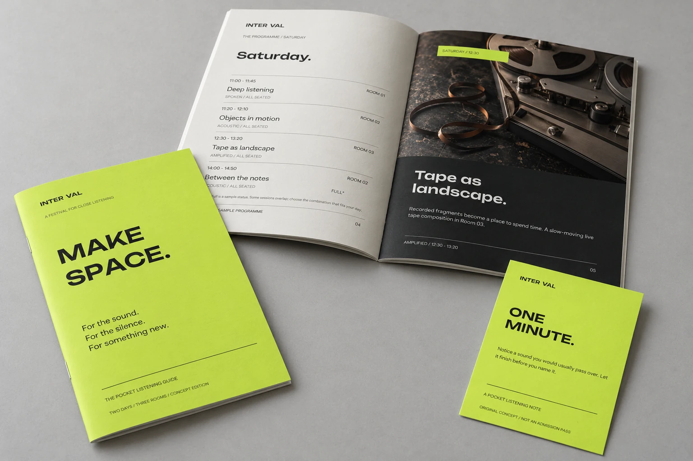
An unfamiliar programme can ask a visitor to make several decisions at once: what sounds interesting, what the room will feel like, and whether there is time to attend.
How can a small cultural festival invite exploration while helping a newcomer build a manageable day?
How can the same identity feel arresting on a poster and calm enough to use when comparing session times?
This newly developed portfolio study combines concept strategy, identity direction, interaction design and a coded prototype with AI-assisted development and illustrative imagery. It is not a commissioned festival or evidence of a client engagement.
Research consists of reference review, an assessment of the existing portfolio and assumption mapping. No audience interviews, usability-test participants, ticket sales or measured improvements are claimed. The eight sessions and three rooms are original sample content.
Brand naming is provisional; availability and trademark checks are outside the concept scope.
See the visual exploration and references ↗Day, format and seating are visible immediately. An optional arrival and departure window narrows the programme to sessions a visitor can attend from start to finish. Every applied filter can be removed independently.
Tradeoff: partial attendance is excluded. This makes the recommendation predictable; a real festival would first need to establish its re-entry policy.
Overlaps require explicit replacement. Short breaks are different: visitors choose a preferred gap, see where their plan falls short, and can explore alternatives to either adjacent session. Nothing changes until they choose; Undo remains available.
Tradeoff: the preferred break is personal planning guidance. It never pretends to know walking speed or an unverified venue distance.
01, 02 and 03 appear on the printed guide, signs, session details and personal plan. A number opens the corresponding digital room guide, keeping the visitor’s context intact across media.
Tradeoff: a clear conceptual directory supports recognition. It is not presented as a measured floor plan or verified accessible route.
A readable text download and a printable sample pass reduce what a visitor needs to remember. Full sessions can be saved as interest separately. Editing the plan invalidates the old pass so stale details cannot appear current.
Tradeoff: there is no simulated checkout or waitlist submission. A live event would need authoritative capacity, fulfilment and privacy decisions.
Bad time range: explain the error and preserve the last valid results.
Try the time window ↗No compatible alternative: keep the current plan and offer another way to adjust.
Try a short-break plan ↗Unknown room: offer the three-room directory instead of a dead end.
Open Room 02 ↗Download unavailable: offer the printable pass as a recovery path.
Inspect a sample pass ↗03 / INTERACTION IN CONTEXT
Explore eight live states at desktop, tablet and mobile widths. These isolated studies use sample choices without changing your own saved plan.
Open the screen studies ↗BEHAVIOUR, NOT JUST APPEARANCE
Desktop rows compare time, session and conditions side by side. On narrow screens, conditions sit beneath the title while the add/remove action stays visible. The room directory becomes a single reading column; the room numbers keep their meaning.
A deliberate gap becomes the visual idea: between INTER and VAL, between large type and useful detail, and between sessions in a personal plan.
#D9F44C#191B18#F3F2EC#5C6257Wide display typography gives the invitation its voice. A restrained sans serif handles descriptions, forms and navigation. Monospace time labels support comparison without turning the whole product into a technical dashboard.
Three illustrative photographs focus on a listening room, magnetic tape and acoustic strings. Each supports the subject of a session. No artificial data waveform or meaningless tiny type is used as graphic filler.
Pinterest discovery informed principles of scale, space and material detail. Pentagram’s Wien Modern case study demonstrates how typography can carry a flexible cultural identity. INTERVAL uses its own naming treatment, compositions, sample programme and interaction model.
Compare all three original moodboard directions ↗05 / EDITORIAL DESIGN
A 12-page A5 pocket guide balances invitation, practical programme information and a place to write. The reading sequence moves from exploration to orientation to a personal plan.
Read all twelve pages ↗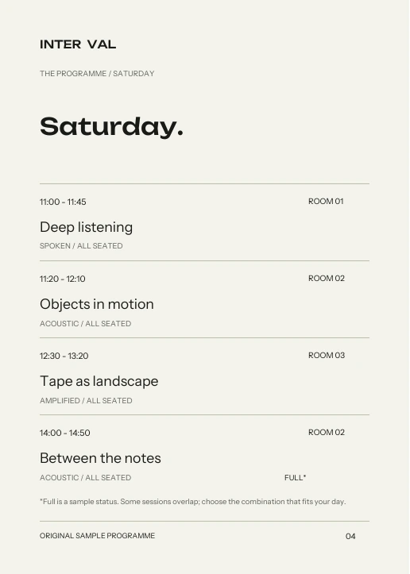
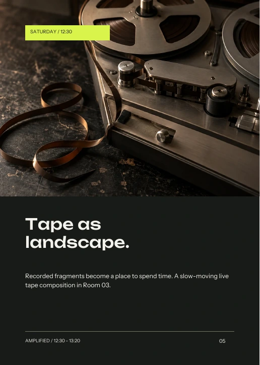
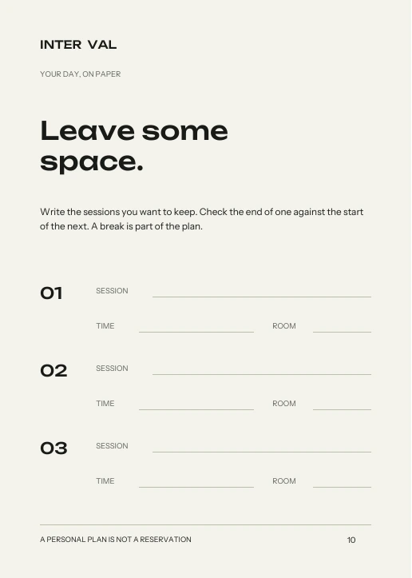
USEFUL NEGATIVE SPACE
The interface calculates gaps. The printed plan leaves writing space between choices. Both encourage a manageable day without forcing a visitor to complete every slot.
A5 / 12 pages / 3 mm bleed / proposed saddle stitch. Reader-order PDF with embedded fonts and trim boxes. Printer imposition, paper dummy and colour proof remain production steps.
Download the guide PDF ↓06 / ONE CAMPAIGN, SIX COMPOSITIONS
Scale, a deliberate interval and a fixed information hierarchy hold the campaign together. The compositions change with the message: invitation, material, programme, conditions, place and pace.
View the six-poster PDF ↗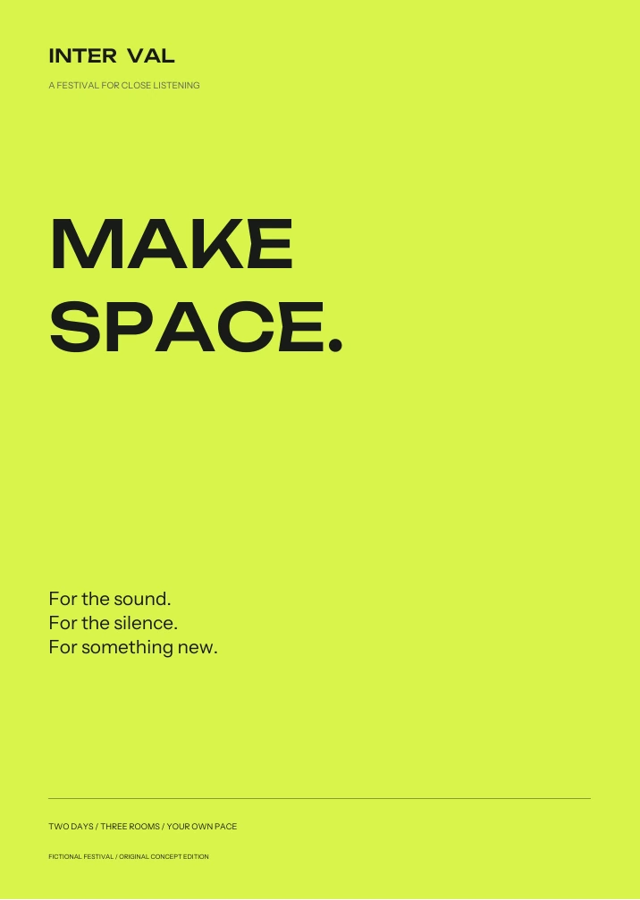
An asymmetric typographic invitation.
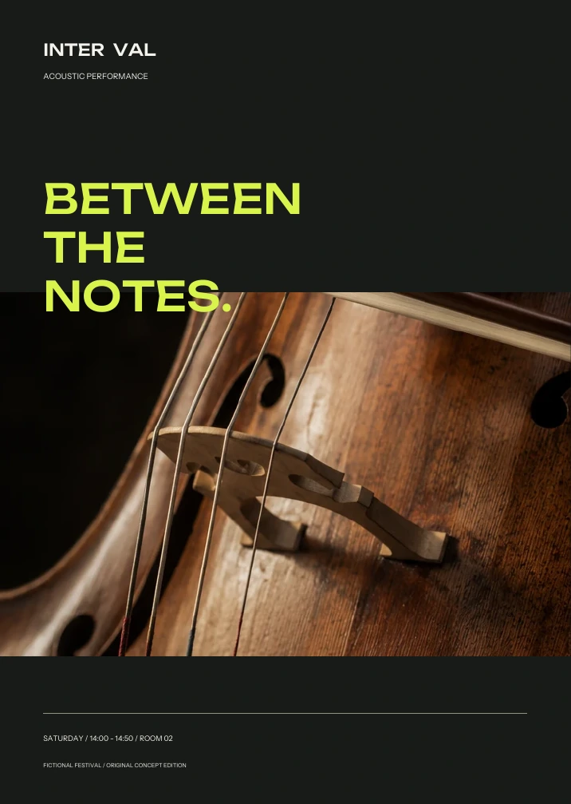
A close material crop with restrained event detail.
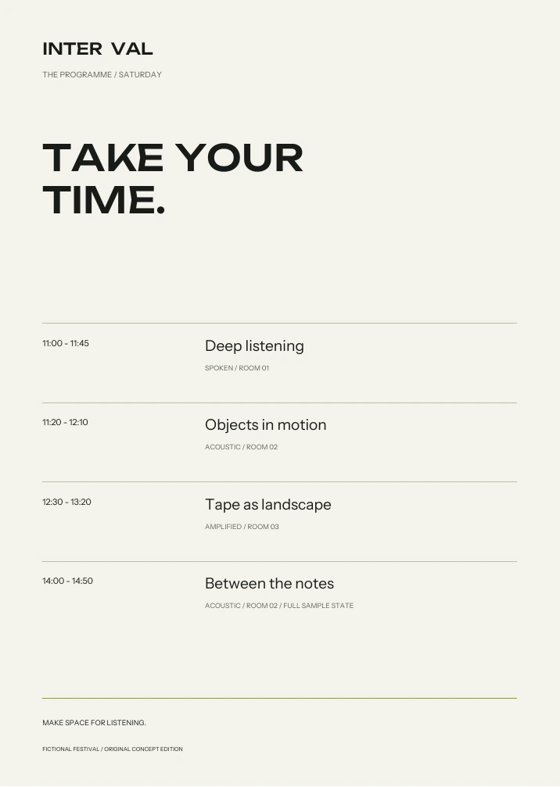
Information density organised into a timetable.
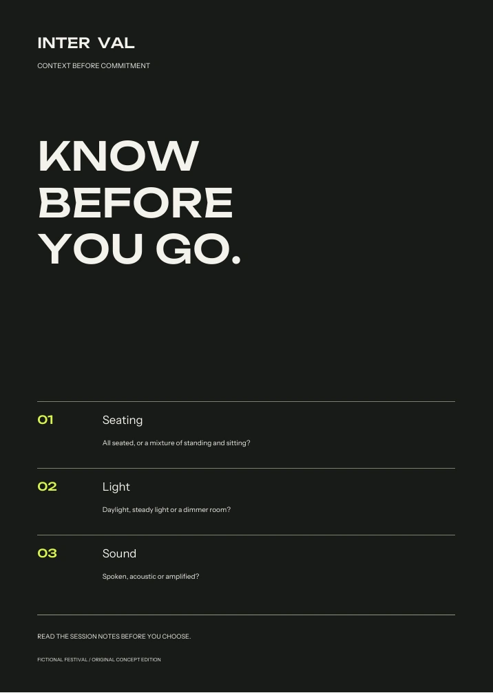
A conditions-first message built from clear questions.
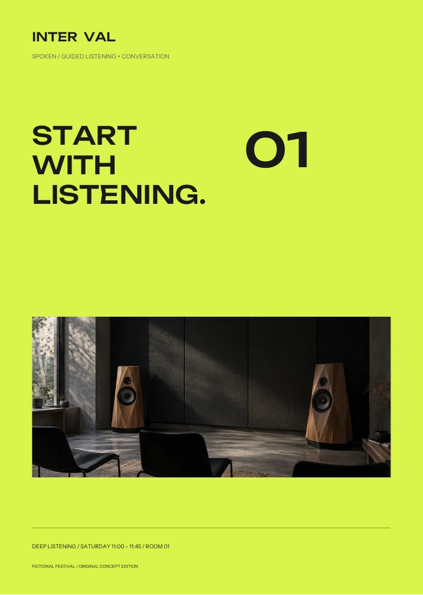
A room-led invitation with a recognisable address.
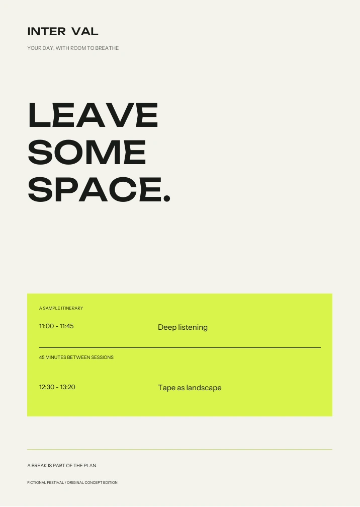
An itinerary becomes the campaign’s graphic device.
Beyond print: a four-frame social story, a vertical announcement and a visitor information email adapt the same hierarchy to different reading speeds.
Explore digital applications ↗07 / PHYSICAL × DIGITAL
The number is the connection. A visitor can recognise it on paper, follow it in space and open it on screen. A scannable code is a shortcut; the readable number remains useful on its own.
Explore the signs and room guides ↗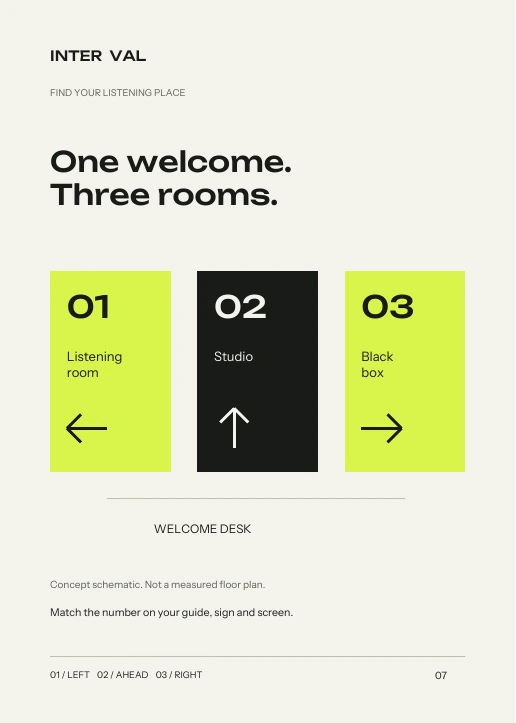
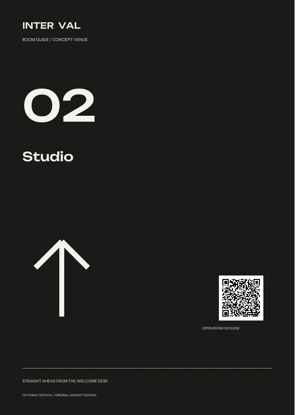
Ahead from the welcome desk. Seating varies by session; check the setting before choosing.
See the room’s programme ↗Fictional venue model. Directions require a real venue survey before use.08 / THE COMPLETE EXPERIENCE
The graphic language does more than identify the event. It helps visitors find a session, recognise a room, understand a condition and keep a plan.
Explore the complete ecosystem ↗45 minutes between sessions
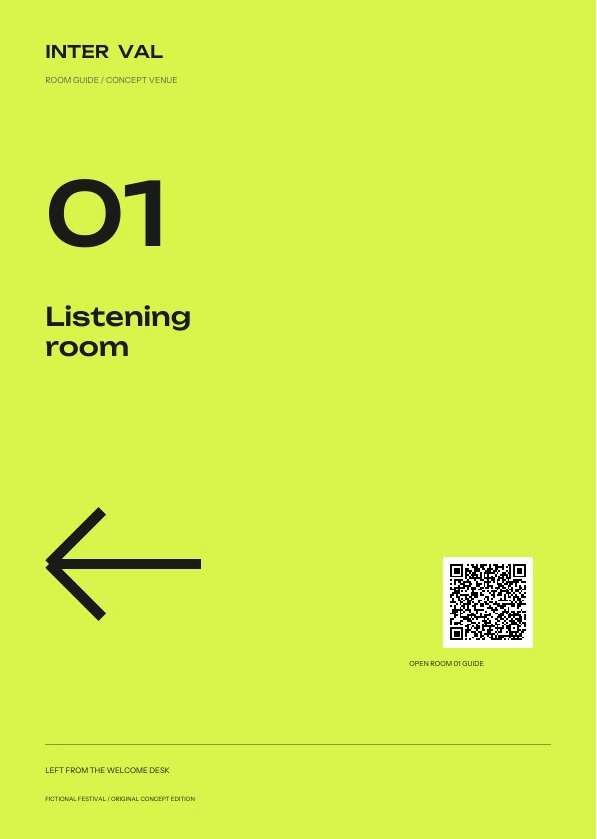
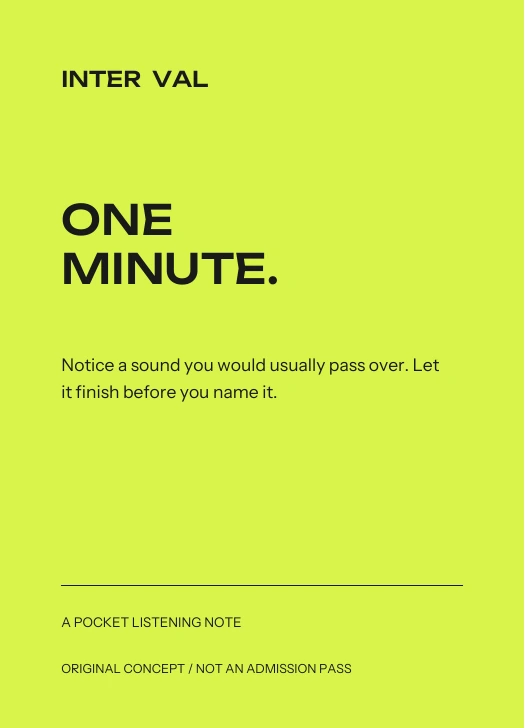
The strongest connection is functional: the identity gives people the same cues in different places. Expressive typography earns attention; clear conditions and reversible choices make that attention useful.
A responsive HTML/CSS/JavaScript product; four purposeful flows; eight isolated screen studies; a twelve-page guide; six-poster campaign; four directional sheets; a two-sided listening card; social and email compositions; shared tokens and component states.
Audience comprehension, real-world wayfinding, assistive-technology usability, venue conditions and print production. This is concept work with sample data, not evidence of launch or measured product impact.
Proposed research only. Interaction logic and local asset links are checked; browser visual, keyboard, screen-reader and real print proofing remain separate validation steps. No participant findings or accessibility certification are claimed.
Inspect the identity and component foundations ↗Information design / Editorial UI